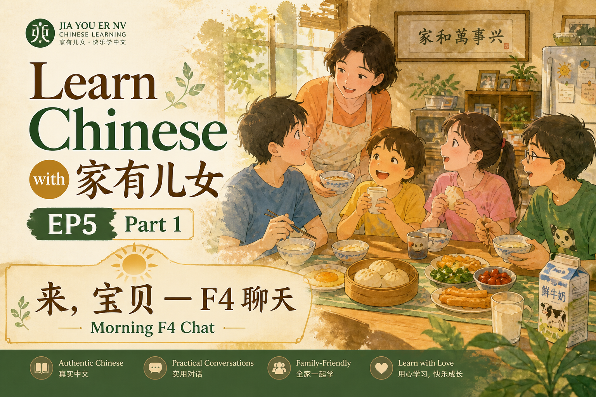
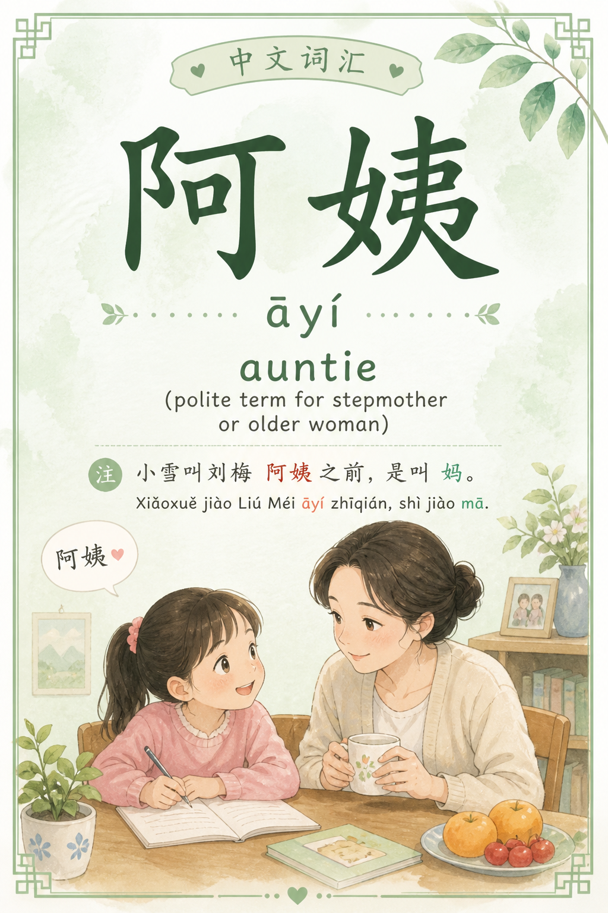
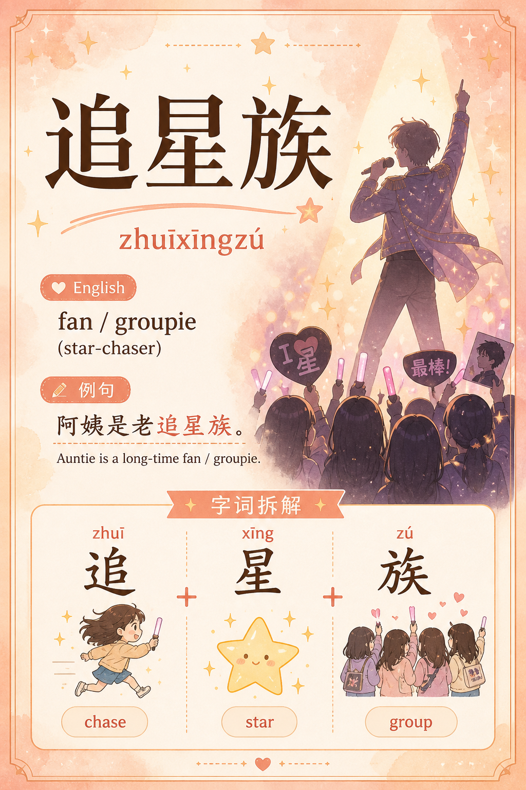
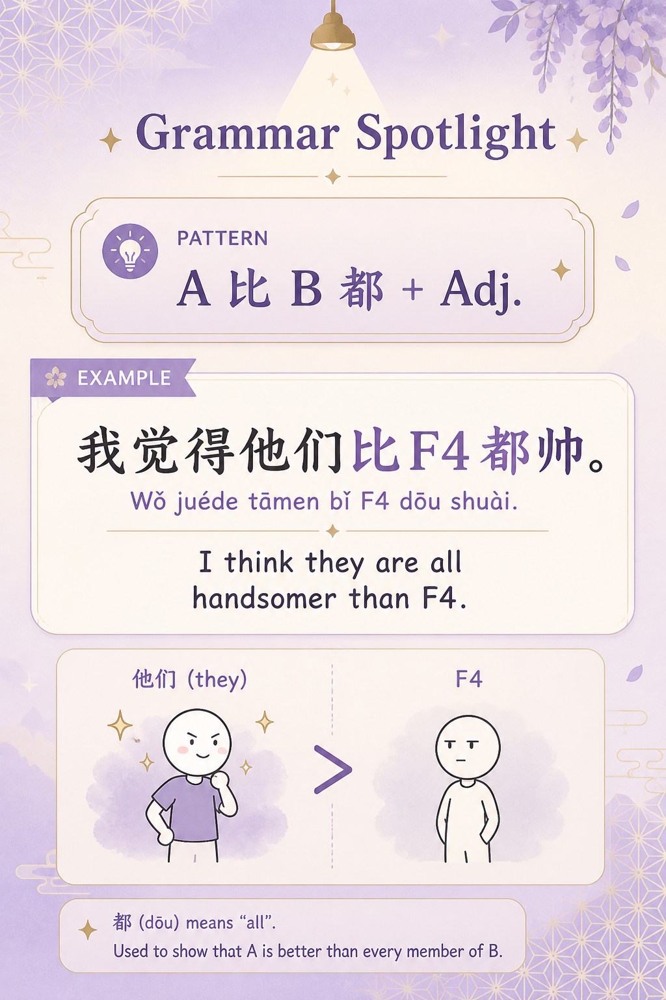
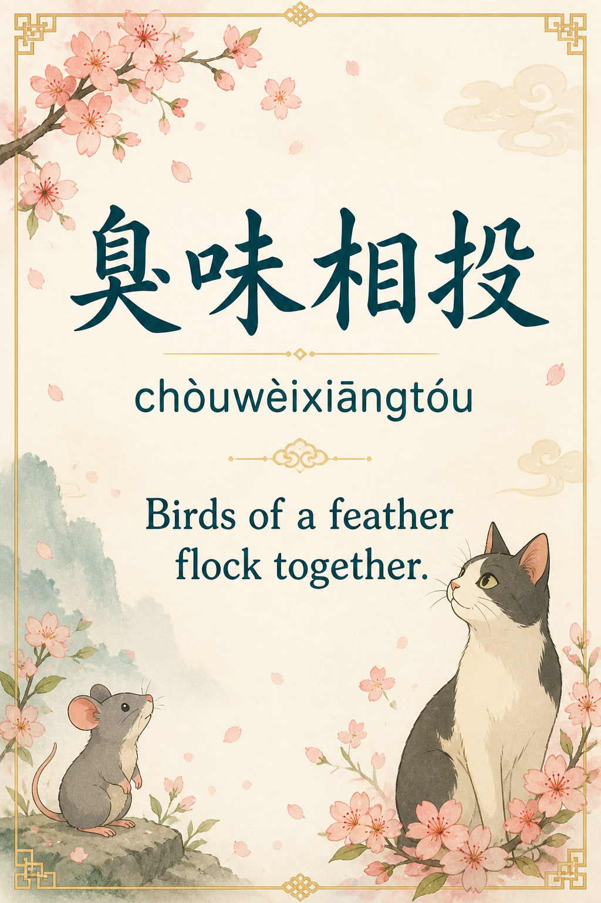
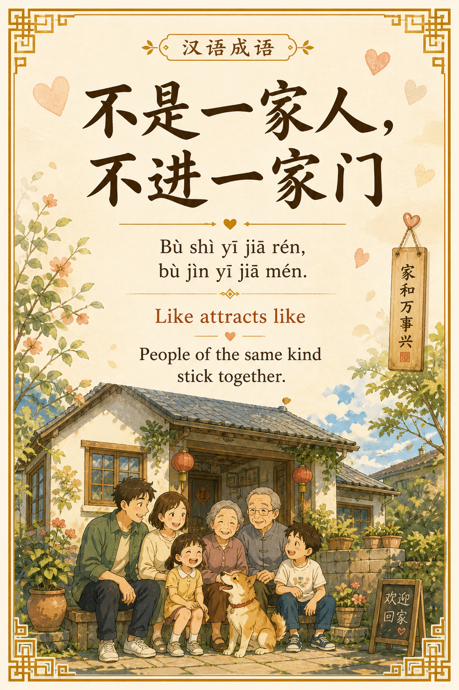
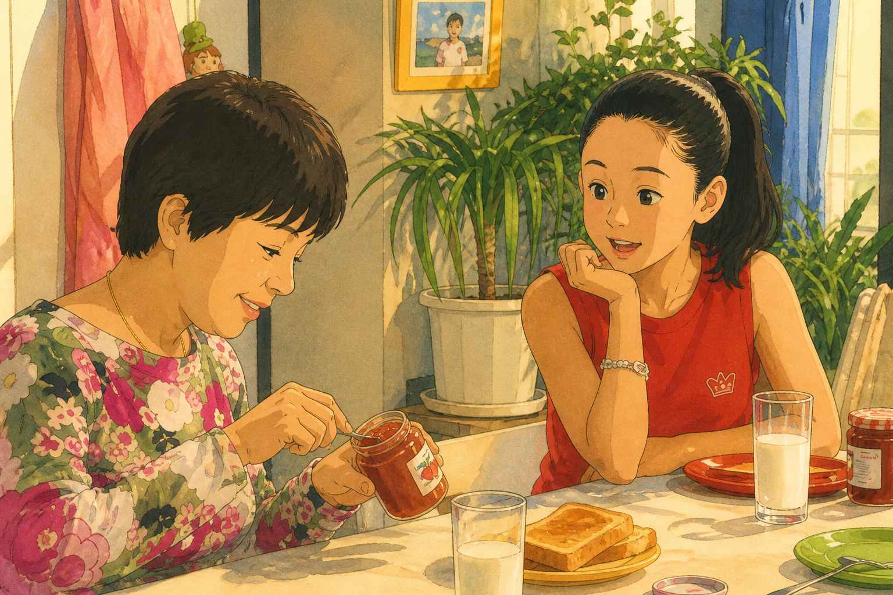
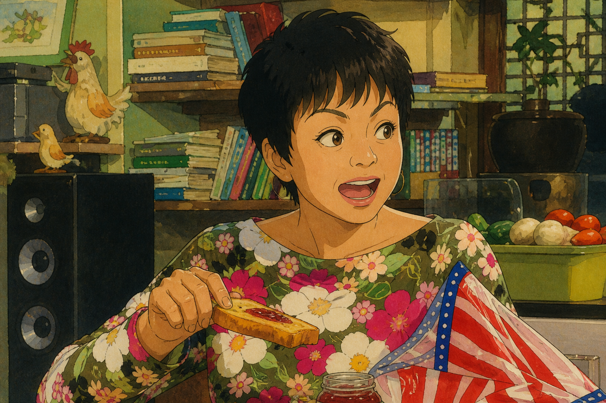
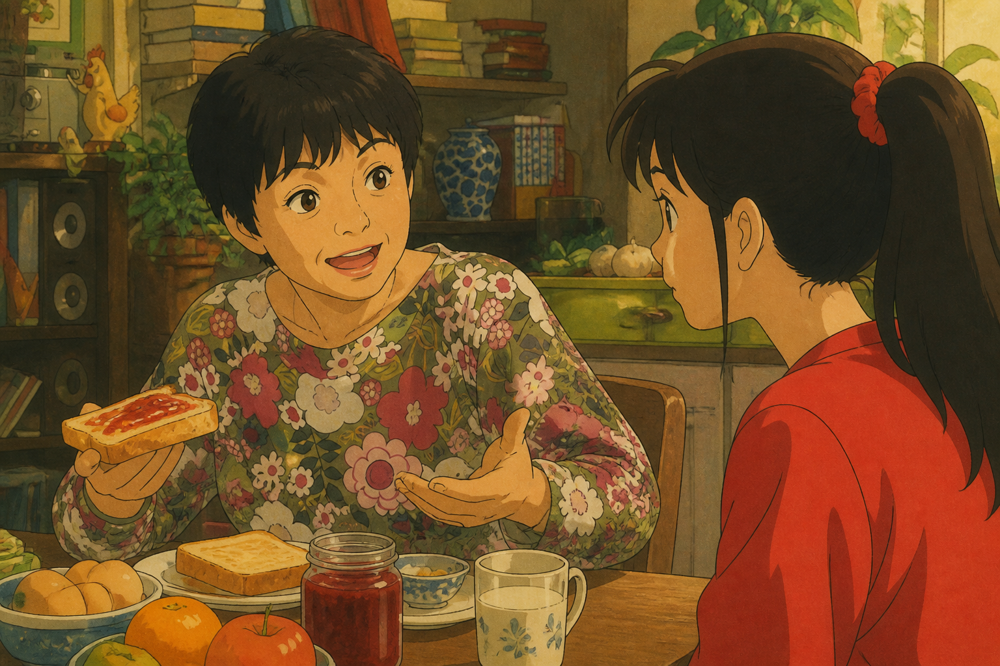
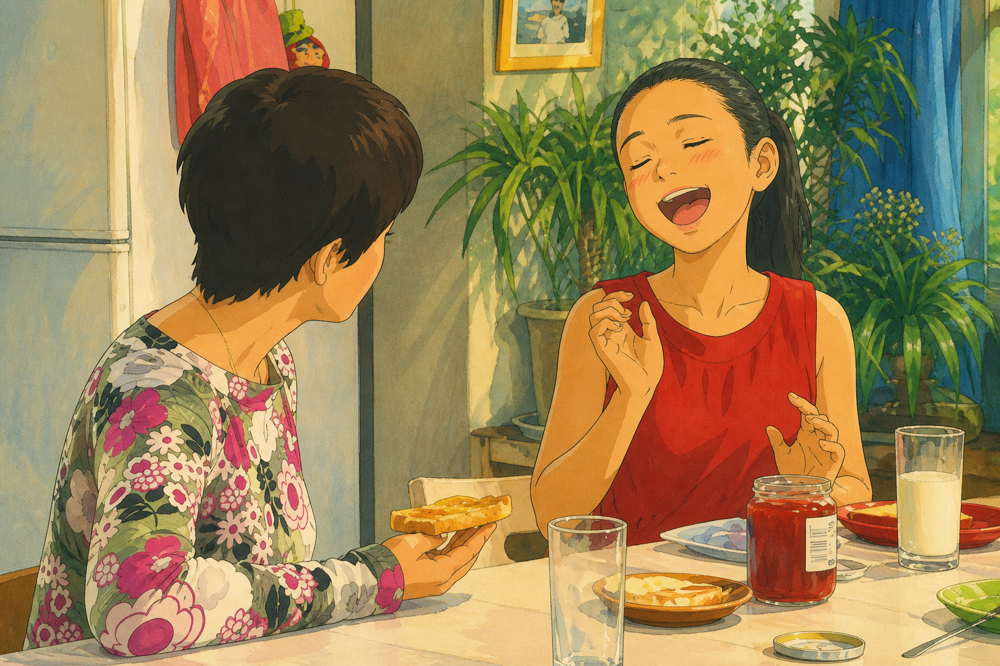

| Speaker | 中文 | Pinyin | English |
|---|---|---|---|
| 夏雨 | 来，宝贝，喝点牛奶。 | Lái, bǎobèi, hē diǎn niúnǎi. | Come on, sweetie, drink some milk. |
| 夏雪 | 阿姨，你喜欢 F4 吗？ | Āyí, nǐ xǐhuān F4 ma? | Auntie, do you like F4? |
| 刘梅 | 喜欢呢，真的。 | Xǐhuān ne, zhēn de. | I do like them, really. |
| 夏雪 | 那您觉得 F4 帅吗？ | Nà nín juédé F4 shuài ma? | Do you think F4 are handsome? |

| Speaker | 中文 | Pinyin | English |
|---|---|---|---|
| 刘梅 | 我觉得吧，他们比 F4 都帅。 | Wǒ juéde ba, tāmen bǐ F4 dōu shuài. | I think they're even handsomer than F4. |
| 夏雪 | 那是什么乐队呀？ | Nà shì shénme yuèduì ya? | What band is that? |
| 刘梅 | 那都是些老乐队。 | Nà dōu shì xiē lǎo yuèduì. | Those are all old bands. |
| Speaker | 中文 | Pinyin | English |
|---|---|---|---|
| 夏雪 | 阿姨，您对流行音乐的历史还真有研究。 | Āyí, nín duì liúxíng yīnyuè de lìshǐ hái zhēn yǒu yánjiū. | Auntie, you really know your pop music history! |
| 刘梅 | 那当然了，阿姨是老追星族。 | Nà dāngrán le, āyí shì lǎo zhuīxīngzú. | Of course! Auntie is an old-school fan. |
| 夏雪 | 我喜欢那首《要定你》。 | Wǒ xǐhuān nà shǒu «Yào Dìng Nǐ». | I like that song "Want You for Sure." |
| 刘梅 | 我也喜欢这首。 | Wǒ yě xǐhuān zhè shǒu. | I like this one too. |
| Speaker | 中文 | Pinyin | English |
|---|---|---|---|
| 夏东海 | 你们俩还有点臭味相投啊。 | Nǐmen liǎ hái yǒudiǎn chòuwèixiāngtóu a. | You two really are birds of a feather! |
| 刘梅 | 那当然了。 | Nà dāngrán le. | Of course! |
| 刘梅 | 这叫不是一家人，不进一家门。 | Zhè jiào bù shì yī jiā rén, bù jìn yī jiā mén. | That's "like attracts like"! |


| Speaker | 中文 | Pinyin | English |
|---|---|---|---|
| 夏雪 | 阿姨，那您唱两句。 | Āyí, nà nín chàng liǎng jù. | Auntie, sing a couple lines for us! |
| 刘梅 | 那第一句词是什么来着？ | Nà dì yī jù cí shì shénme láizhe? | What were the first lyrics again? |
| 刘梅 | 我是骚动，我是爱情的暴风。 | Wǒ shì sāodòng, wǒ shì àiqíng de bàofēng. | I am the commotion, I am the storm of love! |